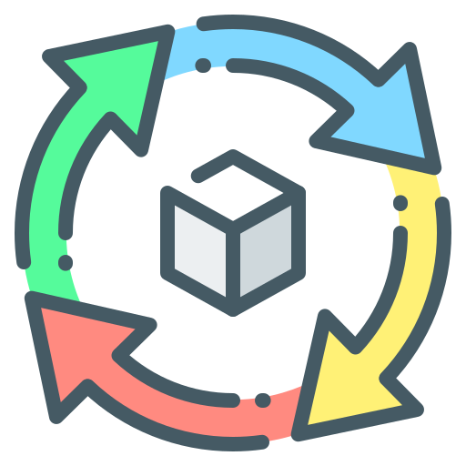

Chapter 1: Introduction to Computing
Computing plays a huge role in our everyday lives, from helping us communicate to improving education and healthcare. I learned how it simplifies tasks, boosts efficiency, and drives innovation in so many fields. It’s amazing to see how much technology shapes the world around us.
Chapter 2: Professions and Careers
Computing offers a wide range of career paths, from programming and software development to system management, networking, and research. Roles like software engineers, AI researchers, database administrators, and multimedia developers are all about solving problems, creating innovative solutions, and driving technology forward. These careers touch almost every part of modern life, from business and healthcare to entertainment and education. It’s exciting to see how diverse and impactful a career in computing can be.

Chapter 3: Processing Cycle
The information processing cycle involves four steps: input, where data is collected using devices like keyboards or scanners; processing, where the CPU transforms raw data into usable information; storage, where data is saved for future use; and output, where the processed information is presented in a readable format, such as on a screen or in a report.

Chapter 4: Computer Systems
A computer system combines hardware, software, data, and users. Hardware includes physical components like input, output, and storage devices. Software refers to programs that run the system. Data is raw information processed into meaningful output, while users interact with the system to utilize its capabilities. These elements work together to perform tasks efficiently.
Favorite Lesson
My favorite lesson would be chapter 3, which is the information processing cycle.
This lesson talks about how information is being process, from its input, processing, data storage, and output.
I favor this lesson because it was easy to learn and understand, this lesson was also tackled already in one of our subjects, so it made it easier to learn and understand.